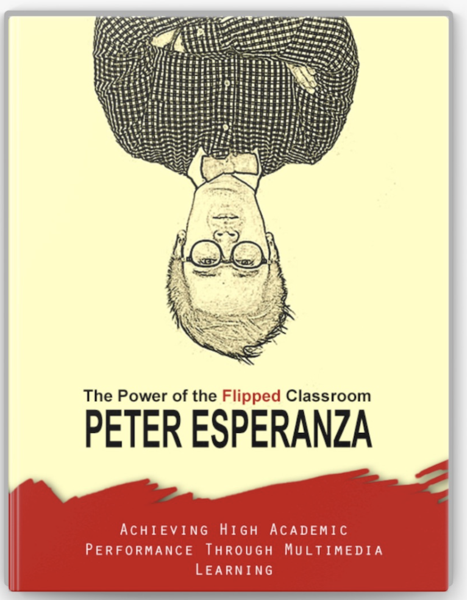

§1Why I flipped my math classroom in 2012
I started flipping my math classroom in 2012, at Barstow High School, in the high desert of California. I want to be precise about that year, because most of the press coverage about me reports later dates — 2014, 2015, sometimes 2016. Those are the years the news started showing up. The work itself started in 2012.
Here's what was happening that year. I was teaching algebra, precalculus, AP Calculus, and AP Statistics — four preps. I was also finishing my doctoral coursework. And I was watching my AP Stats students get crushed by the AP exam every May. In 2009, my first year teaching it, exactly one of my students passed.
I was lecturing the way I had been taught to lecture. I would stand at the board, work problems, ask questions, and watch the same five students nod while the rest stared. The students who got it didn't need me; the students who didn't get it weren't getting it from a one-shot, in-the-moment explanation either. The mismatch was obvious. I just didn't have a fix.
I'd seen Khan Academy by then, and a few other math channels. The idea of recording lectures was in the air. What I didn't have was someone telling me whether it would work in my classroom, with my kids, on my schedule. So I started recording. Camera in front of a small whiteboard, lessons posted to YouTube the night before class, problem sets the next day in class. That was 2012.
In 2013, the schedule changed at Barstow High. Class periods got cut from sixty minutes to fifty. Ten minutes doesn't sound like much until you try to teach calculus inside it. The new period length killed any chance of lecturing and practicing in the same class. The flipped model, which had already been running for a year, suddenly looked less like an experiment and more like the only way the math was going to fit.
The local press caught on before the wider news cycle did. The Daily Press in Victorville ran a piece in November 2012 about a Barstow High math website that was being shared with educators around the district, and a profile in December that walked through what I was doing in the classroom. Two articles within six weeks, both inside the calendar year the work began. The international-recognition piece followed in November 2014. By then, other teachers in the district were already sending me messages. The Apple Distinguished Educator Institute in Berlin asked me to talk about it in 2016. The Asian Journal showed up with a reporter in 2018, the same year the Daily Press ran a follow-up titled "Flipping the Script." The Silver Play Button arrived in 2023. None of that is why I flipped. I flipped because I had four preps, fifty-minute periods, a doctoral dissertation, and one AP Stats student passing the exam. I needed a system that would let me actually help the students who needed help. Recording the lectures was the only way I could think of to free up the class time.
§2What "flipping" actually means in a math class
There is a textbook definition of flipping the classroom that I have never used. Mine is closer to what I told a faculty audience at De La Salle University in Manila in 2017: a flipped classroom is one where students watch and complete the lecture material on their own time, and use class time to work on problem sets with the teacher and their classmates.
That's it. There is no app required, no platform, no special license. It is a rearrangement of when the lecture happens and when the practice happens.
Here is the version that helped my colleagues understand it. Tuesday before flipping: I lecture for thirty-five minutes on the chain rule, then assign fifteen minutes of practice. Some kids start the practice in class, most start it at home. The kids who get stuck at home stay stuck until Wednesday. By Wednesday, half the class has the wrong intuition glued in.
Tuesday after flipping: students watch a six-minute video Monday night that walks through the chain rule with two worked examples. Tuesday they walk in already exposed to the idea. The full fifty minutes is spent on practice — mixed problems, error-finding, peer explanation, and me circulating with my pen and a clipboard, sitting next to whoever is stuck. By the time the bell rings, I've talked to every student who is struggling.
That is the difference. The lecture is the cheap part. The expensive part is what happens when a student is in the middle of working a problem and can't figure out the next step. That moment is where the learning lives, and that moment used to happen at the kitchen table with no one around. Flipping moves it back into the room with the math teacher in it.
§3The first math unit you should flip
If you have not flipped a unit before, do not flip the whole course. Flip one unit. Pick the one you teach worst.
The unit you teach worst is usually the one where you have already given up on the lecture working — where you know, before you start, that half the class is going to be lost by Wednesday. For me, the year I started, that was solving systems of equations in Algebra 1. Not because the math is hard, but because there are several different methods and students need to choose the right one for the right problem. You can't lecture your way into that judgment. You have to coach it, problem by problem.
That is the unit to flip first. Record short videos for each method — substitution, elimination, graphing — five to ten minutes each. Have students watch them at home. Then spend every minute of class time having them choose a method and defend the choice. The lecture becomes the warm-up. The class becomes the gym.
Two reasons to start with your weakest unit. First, the upside is the highest. If your usual lecture-and-pray approach gets you a sixty percent pass rate on that unit, anything that gets you to seventy is a win. Second, you'll find out quickly whether flipping suits your teaching style. If it doesn't work on the unit you teach worst, it won't work anywhere. If it does work — and in my experience it usually does — you've already proven the model in the place it was hardest to prove.
Don't pick a unit you love. Don't pick the one where you have a beautifully timed twenty-minute story-lecture you've been giving for years. That lecture is good. The class is enjoying it. Flipping it would feel like demolishing a perfectly good kitchen. Flip the kitchen that's already broken.
§4How long math videos should actually be
Most of my videos are between five and ten minutes. A few are shorter; almost none are longer. That length is not an accident, and it is not a YouTube best-practice I read in a blog post. It is what I converged on after recording for three years and watching what students actually finished.
I want to be honest about what it felt like in the beginning, because nobody told me and I wish they had. The first videos were hard. It felt awkward talking to a camera instead of a room. The videos ran too long. The workflow was inefficient. A five-minute finished video could take me close to an hour — and in those early months, I still had no idea whether any of it was working. I was finishing my doctoral coursework on the side. I was not sleeping enough. And the videos were getting better slowly, but not nearly as fast as I needed them to.
What changed everything was a YouTube video by Dr. Lodge McCammon on what he calls the FIZZ method. The approach is simple: use a whiteboard or handwritten notes, and film in one take. No elaborate retakes, no heavy editing — write it out, say it once, done. That was the breakthrough I needed. Once I stopped treating every recording as a production project and started treating it as a spoken version of my own notes, the ratio flipped. I was able to record efficiently enough to flip four different classes in two languages and stay ahead of the calendar.
The other thing I discovered, almost by accident, was that writing the lecture out on a whiteboard or a sheet of notes before recording was both my script and my rehearsal. Because I was writing my own explanation, my brain was already organizing what to say and in what order. By the time I pressed record, I had already rehearsed it once, in the act of writing. That gave me confidence. It made the one-take approach work. And it is the same method I would recommend to any teacher starting out today.
Here is the production math, paraphrased from a quote of mine that ran in the Asian Journal in 2018: each ten-minute clip took me about an hour to make. I had to write the lecture out on a whiteboard, film it, edit it, and upload it. An hour for ten minutes of finished video is roughly a six-to-one ratio. If you are flipping a unit with twelve concepts, that is about twelve hours of recording and editing. Plan for it.
Here is the watch-time math, from looking at my own analytics. A six-minute video on a single concept gets watched all the way through. A twelve-minute video on the same concept gets watched for the first four minutes and then closed. The drop-off is sharp, and it is the same students dropping off in both cases — not the strugglers, the everyone. Long math videos are an attendance problem.
The rule I use now is one concept per video. If a topic has three sub-concepts, that is three videos, not one twenty-minute marathon. Each video is short enough that a student who has to rewatch a section can rewatch it without paying the cost of scrubbing through ten minutes of stuff they already know. The rewatch is what makes the model work. Long videos kill the rewatch.
A short note on production. Don't put a lot of work into the first thirty seconds of intro. Students skip it. State the topic, do the math, say a sentence about why it matters, and stop. The video below is one I recorded years ago about how I make these tutorials in the first place. It's not pretty, but the workflow it shows is the same workflow I'd recommend today.

How To Make a Video Tutorial in YouTube · Numberbender · the production workflow this section is describing
§5What to do with class time when the lecture is gone
This is the part of flipping that nobody warns you about. The first day after you've moved the lecture out of the classroom, you walk in with a fifty-minute period in front of you and no plan for filling it.
You do not, under any circumstances, give the lecture again "just to be safe." That defeats the entire model. Students will figure out within a week that the videos are optional, and you'll be back to where you started, except now you've added an hour of evening recording work to your schedule and earned nothing for it.
What I do instead, in roughly this order. I open with a one-minute warm-up problem on whatever was in the previous night's video, just to confirm who watched it. I take the answers out loud, by show of hands or whiteboard, and I make a quick visual map of who got it and who didn't. That takes five minutes. Then I hand out a worksheet of mixed problems on the unit so far, and I circulate. I sit down next to students who are stuck. I ask them to talk me through the step they're on. I correct one thing, then I move. I get to maybe a third of the room each period. The other students help each other.
The Metro.Style piece in 2019 mentioned something about this model that I had not noticed myself. SPED students, and students who couldn't afford private tutors, were using my videos in ways I hadn't planned for. The video on YouTube doesn't care how slow a student needs to play it back, doesn't care if they pause it three times to look up a word, doesn't charge by the hour. The class time, freed up, gave me the bandwidth to actually sit with those students. Both halves of the model — the asynchronous video and the synchronous class — were doing something the old lecture couldn't do.
Class time, post-flip, is also where you find out who hasn't watched the video. The students who didn't watch are the ones who can't start the warm-up. You don't have to ask them. The room tells you. The follow-up is a private conversation, not a class-wide guilt trip. You ask what got in the way, you suggest watching during lunch, and you keep moving. The model is not built on enforcement. It is built on making the asynchronous version more useful than not watching.
§6Common mistakes I made
There are five mistakes I made in the first two years of flipping that I would warn anyone away from now. They are not the mistakes I expected to make.
The first one is the one in the Asian Journal piece. I recorded videos for four classes simultaneously, while I was finishing my doctoral coursework, and I stopped sleeping. The exact framing is on the record: I had no social life, I was finishing my dissertation, and it was, in my own words at the time, all worth it. Looking back, the "all worth it" was the kind of thing you say when you're too tired to know better. Don't try to flip every prep at once. Flip one. Get it stable. Flip the next one in the following semester.
The second mistake is video length. I started with twelve-to-fifteen-minute videos because that's how long a chunk of my live lecture was. Within a few months I could see in the analytics that nobody finished them. The fix is the rule from the previous section: one concept per video, five to ten minutes max. If a topic spills over, it's two videos.
The third mistake is treating the flipped class as content delivery. The first couple of months, I thought my job was to make videos. The videos turned out to be the easy part. The hard part — the part the model lives or dies on — is what I do with the classroom time. If you flip and don't redesign your class period, all you've done is move the boring part of class into the evening and kept the boring part of class in the morning. The model gets you nothing.
The fourth mistake is assuming students will watch. Some won't. Not because they're lazy, but because the watching habit is new and competing with everything else in their evening. Build a quick accountability loop: a one-minute warm-up problem, a one-question entry ticket, a quick partner check-in. Don't make it punitive. Make it visible. Students who feel seen tend to show up.
The fifth mistake is the one that took me the longest to catch. I built my videos as if I were the only audience that mattered. I was teaching the math the way I would teach myself the math. The students who'd already gotten the concept were fine. The students who hadn't were still getting lost on the same vocabulary, the same notational shortcuts, the same "and as you can see" moments that lost them in the live lecture. The fix is harder than it sounds: record one video for each concept, then have a student you know struggles with the topic watch it and tell you the first place they get confused. Re-record from there. The video gets shorter and clearer every time.
There are smaller mistakes too — file naming, thumbnail consistency, accidentally posting the wrong video the night before a quiz. Those you'll catch yourself. The five above are the ones I'd want to warn a colleague about before they start. The video below is from a few years in, when I was trying to explain the whole model in retrospect to other teachers. The honest part of it is the part I've kept doing.

How I Flipped My Classroom in Barstow High School · Numberbender · the model in retrospect, in my own words
§7Flipped classroom in hybrid and fully online courses
Most of what I've written so far is about a face-to-face high school classroom. The model adapts. I'm currently teaching at Barstow Community College, and a chunk of my load is online or hybrid. The flipped structure changes the balance, but the core idea is the same.
In a fully online math class, the videos do most of the heavy lifting. There is no in-person room to redesign, so the redesign happens in your asynchronous discussion structure and your synchronous office hours. I post the videos by topic, post a worked-example walk-through students can follow at their own pace, and then run live sessions twice a week where students bring problems they're stuck on. The live session is the equivalent of the freed-up class period. Most of it is me sharing my screen, working a problem somebody asked about, and asking the room what they would have done differently.
In a hybrid class, the model is closer to its original form. Students watch the videos before class, and the in-person time is for problem sets and one-on-one help. The thing that surprised me, working with adult learners, is how fast they take to it. A community college student with a job and two kids is not interested in sitting through a lecture they could have watched at lunch. Give them the video and they will watch it on their break. Give them in-person time to ask the actual question that's blocking them, and you have a class that feels useful.
I'm in the middle of a piece of action research on this right now. The 2016 Springer paper, which I'll talk about in the next section, was a randomized controlled trial in a high school setting. The community college version is what I'm collecting data on this academic year — 2025 to 2026. I'm not going to claim findings the data doesn't support. What I can say is that the qualitative signal so far is consistent with the K-12 work: students show up to the in-person session more prepared, and the in-person session does more of the work that used to happen at home alone.
When the paper is ready, it'll go on the research section of this site. For now, treat the higher-ed application as supported by the underlying model and being studied directly, but not yet formally published.
§8What the research actually shows
The honest answer is in two parts. First, the personal part.
When I started teaching AP Statistics in 2009, exactly one of my students passed the AP exam. After I started flipping the classroom in 2012 and gaining confidence in the model, that number grew to about ten students passing each year — with scores of 3, 4, and 5. That is a teaching outcome from one classroom, not a research finding. I report it because it's the data I have on my own students, and because it's the data point that convinced me — before any peer review — that the model was doing something the lecture wasn't.
Second, the formal part.
In 2016, I co-authored a chapter in the Springer Lecture Notes in Computer Science series, in the proceedings of the European Conference on Technology Enhanced Learning. The study was a year-long randomized controlled trial with ninety-one high-school algebra students, split between a flipped condition and a traditional-lecture condition. The treatment effect was statistically significant in favor of the flipped group on the performance measure, with a p-value below .05. The full citation is in the references at the bottom of this page; the DOI is 10.1007/978-3-319-45153-4_7. As of this writing, the paper has thirty-one citations on Springer's count and over seven thousand accesses.
Across a year-long intervention with ninety-one high-school algebra students, the flipped-classroom condition produced statistically significant gains in mathematics performance compared to the traditional-lecture condition (p < .05), along with measurable improvements in student attitudes toward mathematics.
Esperanza, P., Fabian, K., & Toto, C. (2016). Springer LNCS Vol. 9891.I want to be careful about how that result is read. n = 91 is a real sample but not a meta-analysis. One school, one teacher running both conditions. The result is consistent with a broader meta-analytic literature on the flipped classroom that has accumulated since 2016 — I won't summarize all of it here — but the citation I would want a colleague to actually read is the Springer paper itself.
There is also a 2021 paper, in the International Journal of Mathematical Education in Science and Technology, which I co-authored with a research team in Cebu. It looks at the utility of the flipped classroom in secondary mathematics across a wider sample. The community college extension I mentioned in the previous section is what comes next. The point of mentioning all three is that the research engagement is ongoing — this is not a one-paper field, and not a one-paper claim from me.
§9The exact tools I use
The setup is much smaller than people expect.
In a 2023 post on the Apple Education Community, I described it in my own words. I detail my step-by-step process for creating engaging and effective flipped-classroom videos, and by utilizing simple tools like my MacBook built-in camera, a cut-out whiteboard, and colored markers, I have been able to make math more inviting and accessible to my students.
That is the whole production rig. A MacBook. The camera that came with the MacBook. A small whiteboard with the corners cut so the camera can see my hand without seeing the edges. A handful of colored markers — I use color to separate steps in a worked problem because students who can't follow the algebra can usually follow the color. No external microphone for years; eventually I added one, but it wasn't required to start. No green screen. No teleprompter. No second camera.
The recording flow is just as small. I write out the lecture on the whiteboard first, in pencil so I can erase. I rehearse it once. Then I film it in one take, talking the way I'd talk to a student in office hours, with no script. Then I edit out the long pauses in iMovie. Total time per ten-minute finished video is about an hour, as I mentioned in section four.
The reason this matters: a lot of the people I talk to about flipping put off starting because they're waiting on equipment. Don't. The equipment is whatever you have. The thing that makes a flipped video work is not the production value, it is whether the student can actually follow the math. A clear hand-drawn whiteboard with color, recorded on a laptop camera in a quiet room, beats a poorly explained video shot in 4K every time.

The Power of the Flipped Classroom
The long version of everything in this section. The book started as my Apple Distinguished Educator Summer Institute 2015 "One Best Thing" project and has been a free download ever since. It walks through the production process, the classroom redesign, and the early student data, with embedded video. If you'd rather watch the system explained in long form, the book is the place.
§10Your next 7 days: a starter plan
If you've made it this far, you probably want a place to start. Here's what I'd do, day by day, this coming week. None of it requires you to commit to flipping the whole course.
Day one is the watching day. Open the Numberbender YouTube channel, pick the video below, and watch it the way a student would. You're not looking for production tips. You're looking for whether the format is something you could see yourself making — a hand at a whiteboard, a voice explaining the math, no extra production. If you watch and think "I could do that," the rest of the week is achievable.
Day two is the picking day. Choose one unit. The unit you teach worst, per section three above. Write down the three to five concepts in that unit on a piece of paper. Each one of those is a video.
Day three is the writing day. Pick one of those concepts — the easiest one, not the hardest. Write out, in pencil on a whiteboard, the way you would explain it to a student in office hours. Keep it under ten minutes when spoken aloud. Time yourself.
Day four is the recording day. Open the camera app on your laptop. Position the laptop so the camera sees your whiteboard and your hand. Hit record. Talk through the explanation once. Don't redo it if you flub a word; the students don't care. Stop the recording. The first one is going to be uncomfortable. That is normal.
Day five is the watching-yourself day. Watch the video back, all the way through, at normal speed. Note one thing that wasn't clear. That note is your edit list for next time.
Day six is the upload day. Post the video to YouTube as Unlisted. Send the link to a student you trust. Ask them to watch it before class and tell you, honestly, where they got confused. Re-record that section if you need to.
Day seven is the using day. Show the video to your class — either by sending the link the night before or by playing it as the first five minutes of the period — and then run the rest of class as practice on the same concept. See what happens. Most teachers I've worked with describe the first time they did this as "easier than I expected."
That's the seven days. At the end of it you have one video, one redesigned class period, and a real-world data point about whether you and the model fit. If you keep going, the next twenty videos are easier than the first one. The hard part was always the first one.

Benefits of a Flipped Classroom — AP Calculus Students Share Their Experience · Numberbender · what students get out of the model, in their own words
§11FAQ
How long does each video actually take to make?
About one hour of work for every ten minutes of finished video, in my experience. That includes writing out the lecture, recording, editing, and uploading. The first few videos always take longer because the workflow is new. By video twenty the per-minute time drops sharply. If you're flipping a unit with five concepts, plan on ten to twelve hours of total production time before the unit launches.
Do I need a fancy camera, microphone, or studio setup?
No. The setup I've used to record over a thousand videos is a MacBook, the built-in MacBook camera, a small cut-out whiteboard, and colored markers. I added an external microphone after the first couple of years, but the channel grew without it. The thing that makes a math video work is whether a student can follow the math — production polish is not what gets a student to understand the chain rule.
What about students who won't watch the videos?
Some won't, especially in the first week. Build a quick in-class accountability loop — a one-minute warm-up problem on the previous night's video — so the room visibly sorts itself into watched and didn't-watch. Then have a private conversation with the students who didn't, find out what got in the way, and offer a place to watch during lunch or the first five minutes of class. Don't make it punitive; make it visible.
Does this work in college, not just high school?
It works in both. The original 2016 Springer randomized controlled trial was conducted in a high school setting, with statistically significant gains for the flipped condition. I'm currently teaching at Barstow Community College and running an action-research extension of that study in the higher-ed setting during the 2025–2026 academic year. The qualitative signal so far is consistent with the K-12 results; the formal community college findings will be published when data collection is complete.
How do I assess whether flipping is actually working?
Three signals to watch in the first month. First, the in-class warm-up — are more students starting to get the right answer day-of? Second, the help-seeking pattern — are students bringing better, more specific questions to class than they used to? Third, the unit assessment — does the score distribution shift? If you see motion in those three within a unit, the model is doing what it's supposed to do.
What if I'm the only one in my department who wants to do this?
That's normal. I was the only one for years. Flipping is a teacher-level decision, not a department-level one — you can run it inside a single section without anyone else changing anything. Document what happens in the first unit so you have something concrete to show the department when they start asking questions. The colleagues who care about student outcomes will start asking once your numbers move.